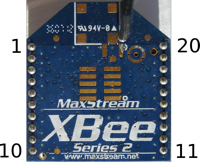
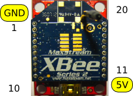

|
Configuring an XBee for I/O samples can be a frustrating experience.
First you have to look in the Digi command reference table to find out
what pins support Digital or Analog, then determine the location of the
physical pin, and finally determine the API method to call to get the
value. This guide attempts to simply the process. The following
image shows the physical layout of pins 1 through 20 of an XBee.
Although this is a series 2 XBee, the pin layout is identical to series 1
(805.15.4), both Pro and standard.  If you are
using the XBee Explorer, remember it has two extra pins, GND and 5V, as
shown  | Pin
# | AT Command | Description | Default
Configuration | Supported Configurations (Value) | Analog
I/O Method | Digital I/O Method | | 1 | n/a | Power
Supply | n/a | | n/a | n/a | | 2 | n/a | UART Data Out | n/a | | n/a | n/a | | 3 | n/a | UART Data
In |
n/a |
|
n/a |
n/a | | 4 | n/a | Digital Output 8 (not supported as of 2/28/09) | n/a | | n/a | n/a |
| 5 | n/a | Module
Reset (reset pulse must be at least 200 ns) | n/a | | n/a | n/a | | 6 | P0 | PWM Output 0
/ RX Signal Strength Indicator | RSSI_PWM | DISABLED (0x0), RSSI_PWM
(0x1), PWM_OUTPUT (0x2) | n/a | n/a | | 7 | P1 | PWM Output 1 | DISABLED | DISABLED
(0x0), RSSI_PWM (0x1), PWM_OUTPUT (0x2) | n/a | n/a | | 8 | n/a | Do not
connect | n/a | | n/a | n/a | | 9 | D8 | DTR / Pin Sleep Control Line or Digital Input 8 | DISABLED | DISABLED
(0x0), DIGITAL_INPUT (0x3) | n/a | isD8On() | | 10 | n/a | Ground | n/a | | n/a | n/a |
| 11 | D4 | Analog
Input 4 or Digital I/O 4 | DISABLED | DISABLED (0x0), ANALOG_INPUT (0x2),
DIGITAL_INPUT (0x3), DIGITAL_OUTPUT_LOW (0x4), DIGITAL_OUTPUT_HIGH (0x5) |
getAnalog4() | isD4On() | | 12 | D7 | Clear-to-Send Flow Control or
Digital I/O 7 | CTS_FLOW_CTRL | DISABLED (0x0), CTS_FLOW_CTRL (0x1),
DIGITAL_INPUT (0x3), DIGITAL_OUTPUT_LOW (0x4), DIGITAL_OUTPUT_HIGH (0x5) | n/a | isD7On() |
| 13 | n/a | Module
Status Indicator | n/a | | n/a | n/a | | 14 | n/a | Voltage Reference for A/D Inputs | n/a | | n/a | n/a |
| 15 | D5 | Associated
Indicator, Analog Input 5 or Digital I/O 5 | ASSOC_LED | DISABLED
(0x0), ASSOC_LED (0x1), ANALOG_INPUT (0x2), DIGITAL_INPUT (0x3),
DIGITAL_OUTPUT_LOW (0x4), DIGITAL_OUTPUT_HIGH (0x5) |
getAnalog5() | isD5On() | | 16 | D6 | Request-to-Send Flow Control, Analog
Input 6 or Digital I/O 6 | DISABLED | DISABLED (0x0), RTS_FLOW_CTRL (0x1),
DIGITAL_INPUT (0x3), DIGITAL_OUTPUT_LOW (0x4), DIGITAL_OUTPUT_HIGH
(0x5) | n/a | isD6On() | | 17 | D3 | Analog Input 3 or Digital I/O 3 | DISABLED | DISABLED
(0x0), ANALOG_INPUT (0x2), DIGITAL_INPUT (0x3), DIGITAL_OUTPUT_LOW
(0x4), DIGITAL_OUTPUT_HIGH (0x5) | getAnalog3() | isD3On() | | 18 | D2 | Analog
Input 2 or Digital I/O 2 | DISABLED | DISABLED (0x0), ANALOG_INPUT (0x2),
DIGITAL_INPUT (0x3), DIGITAL_OUTPUT_LOW (0x4), DIGITAL_OUTPUT_HIGH (0x5) |
getAnalog2() | isD2On() | | 19 | D1 | Analog Input 1 or Digital I/O 1 | DISABLED | DISABLED
(0x0), ANALOG_INPUT (0x2), DIGITAL_INPUT (0x3), DIGITAL_OUTPUT_LOW
(0x4), DIGITAL_OUTPUT_HIGH (0x5) | getAnalog1() | isD1On() | | 20 | D0 | Analog
Input 0 or Digital I/O 0 | DISABLED | DISABLED (0x0), ANALOG_INPUT (0x2),
DIGITAL_INPUT (0x3), DIGITAL_OUTPUT_LOW (0x4), DIGITAL_OUTPUT_HIGH (0x5) |
getAnalog0() | isD0On() |
Example: You want
to read an analog sensor on a remote XBee end device. Look in the table
for an available pin that supports ANALOG_INPUT; let's use 11. In the
table we can see that the AT Command for pin 11 is D4 and the
ANALOG_INPUT parameter value is 0x2. Now plug your end device into your
computer and open X-CTU. Select enable API mode and use escape
characters. On the Modem Configuration tab and click "Read". Find D4
in and set to "2 - ADC". Now enable I/O samples by setting IR to "1388"
(every five seconds) and click "Write" to save the configuration. Now
connect the XBee coordinator to your PC and start receiving the samples
with the getAnalog4() method in the IoSample.java class. | Pin
# | AT Command | Description | Default
Configuration | Supported Configurations (Value) | Analog
I/O Method | Digital I/O Method | | 1 | n/a | Power
Supply | n/a | | n/a | n/a | | 2 | n/a | UART Data Out | n/a | | n/a | n/a | | 3 | n/a | UART Data
In |
n/a |
|
n/a |
n/a | | 4 | P2 | Digital I/O 12 | UNMONITORED_INPUT | UNMONITORED_INPUT (0x0),
DIGITAL_INPUT (0x3), DIGITAL_OUTPUT_LOW (0x4), DIGITAL_OUTPUT_HIGH (0x5) | n/a | isD2On() |
| 5 | n/a | Module
Reset (reset pulse must be at least 200 ns) | n/a | | n/a | n/a | | 6 | P0 | PWM Output 0
/ RX Signal Strength Indicator / Digital IO | RSSI_PWM | DISABLED
(0x0), RSSI_PWM (0x1), DIGITAL_INPUT (0x3), DIGITAL_OUTPUT_LOW (0x4),
DIGITAL_OUTPUT_HIGH (0x5) | n/a | isD10On() | | 7 | P1 | Digital I/O 11 |
UNMONITORED_INPUT | UNMONITORED_INPUT (0x0), DIGITAL_INPUT (0x3),
DIGITAL_OUTPUT_LOW (0x4), DIGITAL_OUTPUT_HIGH (0x5) | n/a | isD1On() |
| 8 | n/a | Do not
connect | n/a | | n/a | n/a | | 9 | n/a | DTR / Pin Sleep Control Line | n/a | | n/a | n/a |
| 10 | n/a | Ground | n/a | | n/a | n/a |
| 11 | D4 | Digital
I/O 4 | DISABLED | DISABLED (0x0), DIGITAL_INPUT (0x3), DIGITAL_OUTPUT_LOW
(0x4), DIGITAL_OUTPUT_HIGH (0x5) | n/a | isD4On() | | 12 | D7 |
Clear-to-Send Flow Control or Digital I/O 7 | CTS_FLOW_CTRL | DISABLED
(0x0), CTS_FLOW_CTRL (0x1), DIGITAL_INPUT (0x3), DIGITAL_OUTPUT_LOW
(0x4), DIGITAL_OUTPUT_HIGH (0x5), RS485_TX_LOW (0x6), RS485_TX_HIGH
(0x7) | n/a | isD7On() | | 13 | n/a | Module Status Indicator | n/a | | n/a | n/a |
| 14 | n/a | Not used
on this module. For compatibility with other XBee modules, we recommend
connecting this pin to a voltage reference if Analog sampling is
desired. Otherwise, connect to GND | n/a | | n/a | n/a | | 15 | D5 | Associated
Indicator, Digital I/O 5 | ASSOC_LED | DISABLED (0x0), ASSOC_LED (0x1),
DIGITAL_INPUT (0x3), DIGITAL_OUTPUT_LOW (0x4), DIGITAL_OUTPUT_HIGH (0x5) | n/a | isD5On() |
| 16 | D6 |
Request-to-Send Flow Control, Digital I/O 6 | DISABLED | DISABLED
(0x0), RTS_FLOW_CTRL (0x1), DIGITAL_INPUT (0x3), DIGITAL_OUTPUT_LOW
(0x4), DIGITAL_OUTPUT_HIGH (0x5) | n/a | isD6On() | | 17 | D3 | Analog
Input 3 or Digital I/O 3 | DISABLED | DISABLED (0x0), ANALOG_INPUT (0x2),
DIGITAL_INPUT (0x3), DIGITAL_OUTPUT_LOW (0x4), DIGITAL_OUTPUT_HIGH (0x5) |
getAnalog3() | isD3On() | | 18 | D2 | Analog Input 2 or Digital I/O 2 | DISABLED | DISABLED
(0x0), ANALOG_INPUT (0x2), DIGITAL_INPUT (0x3), DIGITAL_OUTPUT_LOW
(0x4), DIGITAL_OUTPUT_HIGH (0x5) | getAnalog2() | isD2On() | | 19 | D1 | Analog
Input 1 or Digital I/O 1 | DISABLED | DISABLED (0x0), ANALOG_INPUT (0x2),
DIGITAL_INPUT (0x3), DIGITAL_OUTPUT_LOW (0x4), DIGITAL_OUTPUT_HIGH (0x5) |
getAnalog1() | isD1On() | | 20 | D0 | Analog Input 0, Digital IO 0, or
Commissioning Button | NODE_ID_ENABLED | DISABLED (0x0), NODE_ID_ENABLED
(0x1), ANALOG_INPUT (0x2), DIGITAL_INPUT (0x3), DIGITAL_OUTPUT_LOW
(0x4), DIGITAL_OUTPUT_HIGH (0x5) | getAnalog0() | isD0On() |
Example:
You want to read an digital sensor on a remote XBee end device. Look
in the table for an available pin that supports DIGITAL_INPUT; let's use
pin 20. In the table we can see that the AT Command for pin 20 is D0
and the DIGITAL_INPUT parameter value is 0x3. Now plug your end device
into your computer and open X-CTU. Select enable API mode and use
escape characters. On the Modem Configuration tab and click "Read".
Find D0 in and set to "3 - DIGITAL INPUT". Now enable I/O samples by
setting IR to "1388" (every five seconds) and click "Write" to save the
configuration. Now connect the XBee coordinator to your PC and start
receiving the samples with the isD0On() method in the
ZNetRxIoSampleResponse.java class. Note: Both these tables were
generated by the printAll method in XBeePin.java You may find this class useful for
programmatically determining the capabilities of XBee pins.
|

Pin 9 is also DTR, or Data Terminal Ready, on all XBees.